Uma Factor Stitcher
β・公開テスト中因子一覧のスクリーンショットを1枚に結合
使い方初めての方はこちら。画像の追加から結合結果の確認までの流れを解説します。
- ウマ娘の因子一覧をスクロールしながら複数枚撮影
- 撮影した画像をまとめて追加
- 「解析する」を押す
- 画像の順番と重なりを自動判定して結合
- 結合結果を確認
撮影のコツ
- 前後のスクリーンショットに同じ因子が少し入るように撮影してください。
- 複数画像をまとめて追加できます。
- 画像の順番は自動判定するため、通常は手動で並べる必要はありません。
1. 画像を追加
ここにドラッグ＆ドロップ、または Ctrl / ⌘ + V で貼り付け
PNG / JPEG / WebP。同じ画像も追加できます。画像は端末内で処理します。2. 登録画像 0枚
解析時に画像の接続から順序を自動推定します。
詳細・救済用：手動で順序を指定
画像を追加してください。
3. 解析結果
結合プレビュー
開発者向け / Debug
開発用：実画像Debug Fixture
提供された連続スクリーンショット8枚を読み込みます。既存の登録画像はこのセットに置き換わります。読み込み後は通常と同じ解析を実行します。
問題報告には元画像・結合結果のスクリーンショット・「ログをコピー」で取得した要約ログを添えてください。
Debugログ
確定した接続だけ重複を除去します。「要確認」「未解決」はスクロール内容を残すため、その箇所に重複が残ります。共通の固定UIを検出できた場合は、先頭のヘッダーと末尾のフッターを各1回だけ描画します。